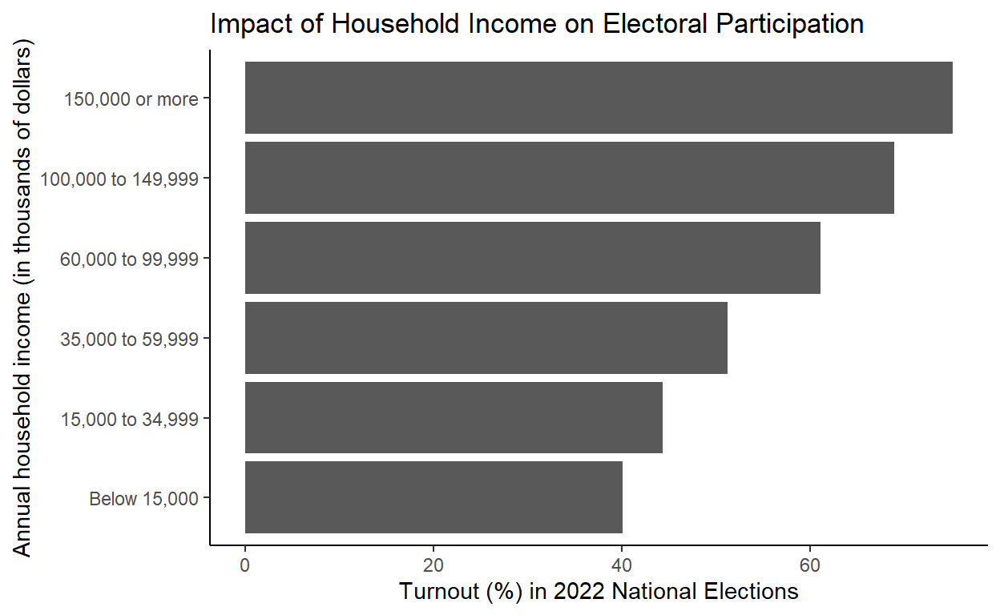

(Older milestones below)
Milestone 3 and 4
See Analysis section for regression and difference in means code/output.
I am interested in studying the effect of one’s mode—or “class”—of work on their democratic participation. Respondents to the U.S. Census Bureau’s most recent Current Population Survey Voting Supplement indicated their “employment class”, broadly one of two categories: employment by a nonprofit entity versus a forprofit entity. Nonprofit entities include the government and regular nonprofit organizations. Forprofit entities include most employers (retail, manafacturing, etc.) as well as the self-employed. Does working for the government increase your ability and/or your willingness to participate? I measure participation through respondents’ turnout rates in the most recent national elections (2022), as reported in the survey. A regression analysis reveals that yes, indeed, working for a nonprofit entity is associated with greater turnout: workers at nonprofits turned out a rate 12.38% higher than workers at forprofits. I also explored the influence of one’s household income on their turnout, assuming that income is a possible confounder: working at a forprofit could be associated with a lower income, and a lower income could be associated with a lower turnout. Income would be driving the difference in turnout between employment classes, then. I confirmed that lower income is associated with lower turnout by calculating the 2022 turnout rates of respondents belonging to various income groups ranging from below 15,000 dollars to above 150,000 dollars, data available in the same census survey (see Visualization section). The regression analysis offered further confirmation: a one dollar increase in annual household income was associated with 0.0002307% increase in turnout in 2022. I also confirmed that workers at forprofit entities receive lower incomes by comparing the average household incomes of nonprofit and forprofit workers: forprofit workers receive an average household income that is $6581.92 lower than what nonprofit workers receive. Therefore it is likely that household income is interfering with the effect of employment class. Naturally, my next step is to compare turnout rates across employment classes within income groups.
#loading data
#preparing data
#replacing coded values
census$employment_class <- census$employment_class |>
case_match(1 ~ "Federal gov't",
2 ~ "State gov't",
3 ~ "Local gov't",
4 ~ "For profit",
5 ~ "Non profit",
6 ~ "Self-employed Inc.",
7 ~ "Self-employed Non-Inc.",
8 ~ "Unpaid",
.default="other")
census$voted_num <- census$voted |>
case_match(1 ~ 1,
2 ~ 0,
.default= 2)
census$voted <- census$voted |>
case_match(1 ~ "Yes",
2 ~ "No",
.default = "other")
census$house_income <- census$income_code |>
case_match(-1 ~ "other",
1 ~ "less than 5",
2 ~ "5 to 7.499",
3 ~ "7.5 to 9.999",
4 ~ "10 to 12.499",
5 ~ "12.5 to 14.999",
6 ~ "15 to 19.999",
7 ~ "20 to 24.999",
8 ~ "25 to 29.999",
9 ~ "30 to 34.999",
10 ~ "35 to 39.999",
11 ~ "40 to 49.999",
12 ~ "50 to 59.999",
13 ~ "60 to 74.999",
14 ~ "75 to 99.999",
15 ~ "100 to 149.999",
16 ~ "150 or more")
#broadening household income categories
census <- census |>
mutate(broad_income_categories = case_when(
income_code >= 1 & income_code <= 5 ~ "Below 15,000",
income_code >= 6 & income_code <= 9 ~ "15,000 to 34,999",
income_code >= 10 & income_code <= 12 ~ "35,000 to 59,999",
income_code >= 13 & income_code <= 14 ~ "60,000 to 99,999",
income_code == 15 ~ "100,000 to 149,999",
income_code == 16 ~ "150,000 or more"))
#creating numeric household_income variable by taking average of upper/lower bounds
census$house_income_num <- census$income_code |>
case_match(1 ~ 2500,
2 ~ 6250,
3 ~ 8750,
4 ~ 11250,
5 ~ 13750,
6 ~ 17500,
7 ~ 22500,
8 ~ 27500,
9 ~ 32500,
10 ~ 37500,
11 ~ 45000,
12 ~ 55000,
13 ~ 67500,
14 ~ 87500,
15 ~ 125000,
16 ~ 150000,
.default = 0)
#creating binary forprofit versus nonprofit variable
census <- census |>
mutate(employment_type = case_when(
employment_class == "Federal gov't" | employment_class == "State gov't" | employment_class == "Local gov't" | employment_class == "Non profit" ~ "Nonprofit",
employment_class == "For profit" | employment_class == "Self-employed Inc." | employment_class == "Self-employed Non-Inc." ~ "Forprofit",
TRUE ~ "other"
))
#filtering out other
census <- census |>
filter(employment_type != "other",
voted != "other")Analysis
#regression
lm <- summary(lm(voted_num ~ employment_type + house_income_num, data = census))
lm |>
broom::tidy() |>
select(term, estimate) |>
knitr::kable()| term | estimate |
|---|---|
| (Intercept) | 0.3781670 |
| employment_typeNonprofit | 0.1237926 |
| house_income_num | 0.0000023 |
Workers at nonprofits turned out at a rate 12.38% higher than workers at forprofits. A one dollar increase in annual household income is associated with 0.0002307% increase in turnout.
#difference in means
diff_in_means <- census |>
group_by(employment_type) |>
summarize(turnout = mean(voted_num) * 100) |>
pivot_wider(names_from = employment_type,
values_from = turnout) |>
mutate(DIM = Nonprofit - Forprofit)
knitr::kable(diff_in_means, digits = 2)| Forprofit | Nonprofit | DIM |
|---|---|---|
| 59.04 | 72.93 | 13.9 |
The average turnout for workers at nonprofit entities was 13.9% higher than workers at forprofit entities.
Visualization
#calculating average household income across employment types
type_income_mean <- census |>
group_by(employment_type) |>
summarize(house_income = mean(house_income_num)) |>
pivot_wider(names_from = employment_type,
values_from = house_income) |>
mutate(difference = Nonprofit - Forprofit)
knitr::kable(type_income_mean)| Forprofit | Nonprofit | difference |
|---|---|---|
| 91981.82 | 98563.74 | 6581.921 |
#calculating turnout rates by employment class
employment_turnout <- census |>
group_by(employment_class) |>
summarize(turnout = mean(voted_num) * 100)
knitr::kable(employment_turnout, digits = 2)| employment_class | turnout |
|---|---|
| Federal gov’t | 70.03 |
| For profit | 56.92 |
| Local gov’t | 74.97 |
| Non profit | 71.29 |
| Self-employed Inc. | 75.04 |
| Self-employed Non-Inc. | 69.01 |
| State gov’t | 74.29 |
#plotting turnout rates by employment class
employment_turnout_plot <- employment_turnout |>
ggplot(mapping = aes(x = fct_reorder(employment_class, turnout), y = turnout)) +
geom_col() +
coord_flip() +
labs(
title = "Impact of Employment Class on Electoral Participation",
x = "Employment class",
y = "Turnout (%) in 2022 national elections",
caption = "Note: Employment class categorizes workers according to the type of ownership of the employing organization. This variable identifies whether the respondent is self-employed, works in the private sector, or in government. (U.S. Census Bureau)"
) +
theme_classic() +
theme(plot.margin = margin(b = 10))
wrapped_caption <- str_wrap("Note: Employment class categorizes workers according to the type of ownership of the employing organization. This variable identifies whether the respondent is self-employed, works in the private sector, or in government. (U.S. Census Bureau)", width = 112)
employment_turnout_plot <- employment_turnout_plot + labs(caption = wrapped_caption)
employment_turnout_plot
#calculating turnout rates by income group
income_turnout <- census |>
group_by(broad_income_categories) |>
summarize(turnout = mean(voted_num) * 100)
knitr::kable(income_turnout, digits = 2)| broad_income_categories | turnout |
|---|---|
| 100,000 to 149,999 | 68.87 |
| 15,000 to 34,999 | 44.36 |
| 150,000 or more | 75.09 |
| 35,000 to 59,999 | 51.20 |
| 60,000 to 99,999 | 61.06 |
| Below 15,000 | 40.10 |
#plotting turnout rates by income group
income_turnout_plot <- income_turnout |>
ggplot(mapping = aes(x = fct_reorder(broad_income_categories, turnout), y = turnout)) +
geom_col() +
coord_flip() +
labs(
title = "Impact of Household Income on Electoral Participation",
x = "Annual household income (in thousands of dollars)",
y = "Turnout (%) in 2022 National Elections"
) +
theme_classic()
income_turnout_plot
Milestone 2
Does one’s class of work affect their degree of democratic participation? I plan to investigate how work conditions influence the ability or willingness of workers to vote. I hypothesize that those who are the most inclined to participate (1) work in settings where politics are involved or discussed and (2) work less hours. Proximity to politics can inspire or pressure one to participate. A less demanding work schedule allows one the time needed to engage in politics. I expect to find, therefore, that government and non-profit employees and the self-employed participate the most: government and non-profit employees due to their proximity to politics, and the self-employed due to their control over their schedules. In election years, the Current Population Survey conducted by the U.S. Census Bureau asks tens of thousands of Americans whether or not they voted in the most recent national election. The latest edition of the survey, based on the 2022 elections, features 264,707,835 responses. On top of vote status, the survey asks respondents to report their “class” of work, one of six categories: employment by (1) the federal government, (2) a state government, (3) a local government, (4) a private for-profit company, (5) a private non-profit entity, or (6) no one (i.e., self-employed). I can compare the turnout rates of each group in the 2022 national elections to determine which participated the most. In other words, the explanatory variable of interest is “class” of work as defined by the Census Bureau and the outcome variable of interest is whether or not the respondent voted (coded “1” for voted and “2” for not voted in the dataset). If my hypothesis is correct, I will observe that workers of classes 1, 2, 3, and 5 (government and non-profit employees) and 6 (the self-employed) turned out to vote at the highest rates in 2022. Workers of class 4 (for-profit employees), who are by far the largest group in the dataset, will have turned out the least.
Link to the dataset: https://data.census.gov/mdat/#/search?ds=CPSVOTING202211&cv=HEFAMINC,PES1&rv=PEIO1COW&wt=HWHHWGT
Project thoughts
I am interested in exploring the impact of British Commonwealth membership on political attitudes, nationalism, and democratic participation. Do citizens of countries that remove the Monarch as their head of state develop a greater sense of national pride and therefore a greater desire to participate politically? I can measure this using voter turnout rates and surveys of populations that have experienced such a transition.